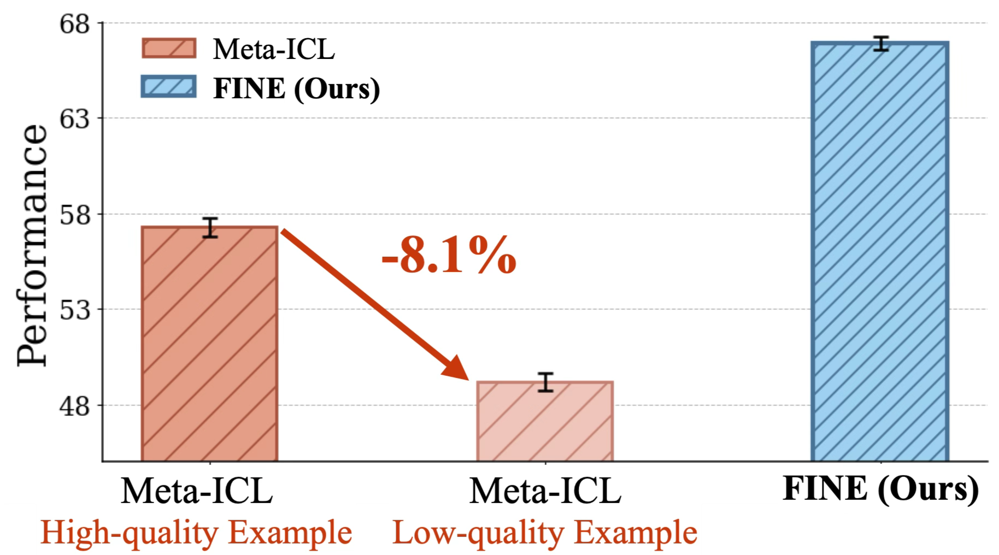
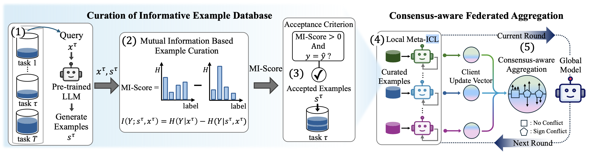
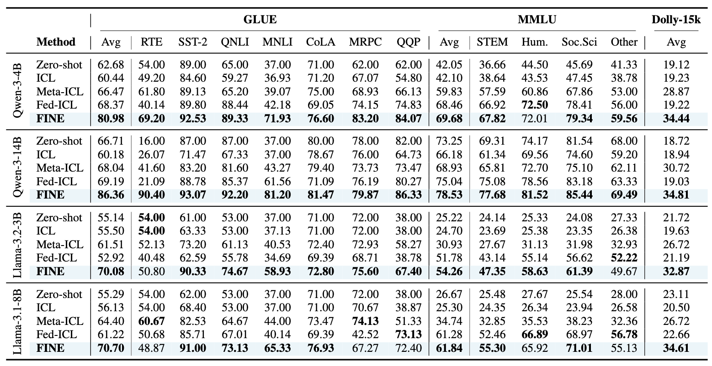
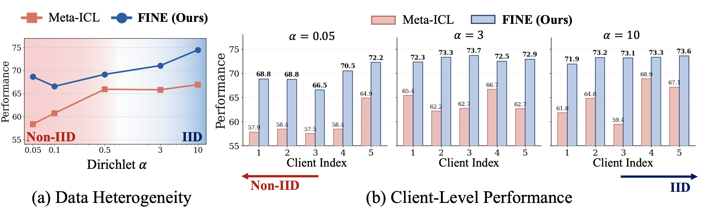
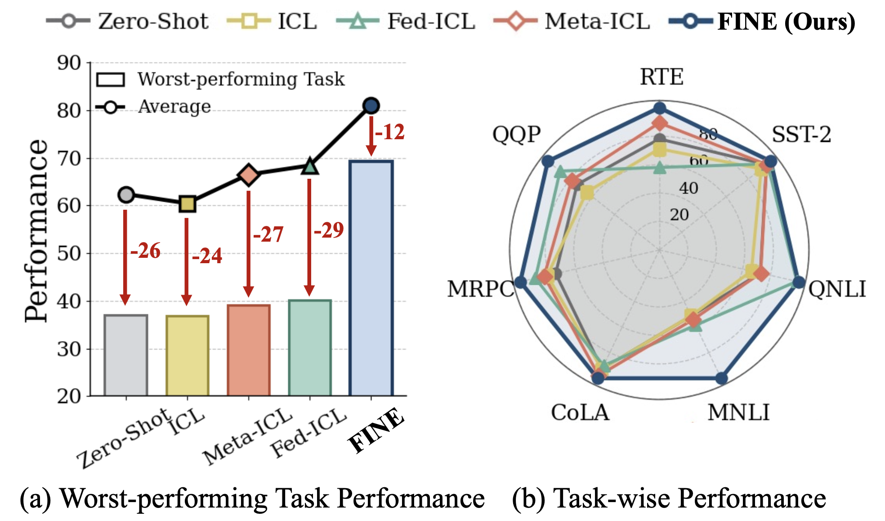
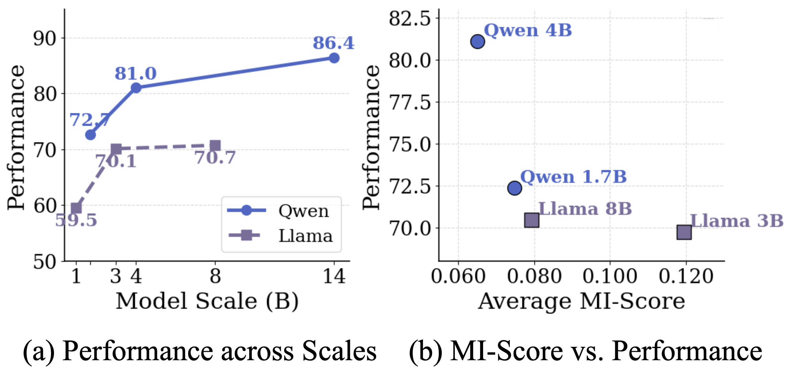

FINE · Federated Meta IN-Context Learning via Informative Example Curation
With the impressive in-context learning (ICL) ability of large language models (LLMs),
Meta-ICL improves this capability by training models on example-conditioned inputs
across multiple tasks. However, its effectiveness is often limited by the lack of informative
and diverse examples, especially in heterogeneous distributed environments where such examples
must be constructed from limited local data.
To address this challenge, we propose FINE,
Federated Meta IN-Context Learning via Informative
Example Curation. FINE consists of two key mechanisms:
mutual information based example curation, which automatically constructs an
informative example database, and consensus-aware federated aggregation,
which collaboratively integrates ICL adaptation signals across heterogeneous models.
Extensive experiments across multiple models and benchmark tasks demonstrate that FINE
consistently outperforms baselines, achieving an average 22.5% improvement
over Meta-ICL in a heterogeneous distributed setting.

Figure 1. Impact of in-context example quality on Meta-ICL performance on GLUE for Llama-3.2-3B. Meta-ICL is highly sensitive to example quality, showing that constructing high-quality examples is critical in heterogeneous distributed settings. FINE addresses this challenge through mutual information based example curation and consensus-aware aggregation.

Figure 2. Overview of FINE. (1) Each client first samples a query from its local dataset for task τ and generates candidate examples using a pre-trained LLM. (2) The candidates are then evaluated through mutual information based example curation, and (3) only examples that reduce entropy and lead to a correct prediction for the query are added to the example database. Using the curated examples, (4) each client meta-trains and sends a client update vector to the server. (5) The server finally integrates these updates through consensus-aware federated aggregation and broadcasts the updated global model for the next round.
Automatically generates and curates informative user-specific examples using a mutual information based criterion, ensuring each retained example reduces prediction uncertainty.
Collaboratively integrates ICL adaptation signals across heterogeneous models through parameter-level consensus without sharing local data, improving generalization.
Combines Meta-ICL with federated learning to improve transferable ICL capability across heterogeneous clients under realistic non-IID data distributions.
Experiments across multiple models (Qwen, Llama) and diverse tasks (GLUE, MMLU, Dolly-15k) under a wide range of heterogeneous distributed settings.

Table 1. Main results on all benchmarks across different backbone models. The best performance within each backbone is highlighted in bold. FINE significantly outperforms all baseline methods across all evaluated tasks and backbone models.

Figure 3. Data heterogeneity and client-level performance under different Dirichlet α on GLUE for Llama-3.2-3B. FINE shows noticeably smaller performance variation across clients than Meta-ICL.

Figure 4. (a) Worst-performing task performance and (b) task-wise performance comparison on GLUE for Qwen-3-4B. FINE achieves the strongest performance on the worst-performing task among all methods.

Figure 5. Effect of backbone scale on performance and MI-Score on GLUE. (a) Performance across backbone scales. (b) Average MI-Score versus performance. Higher-performing models tend to show lower average MI-Scores, suggesting that stronger backbones already make confident predictions and thus require less additional uncertainty reduction.